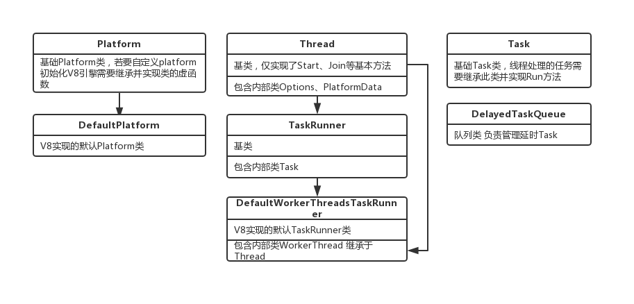
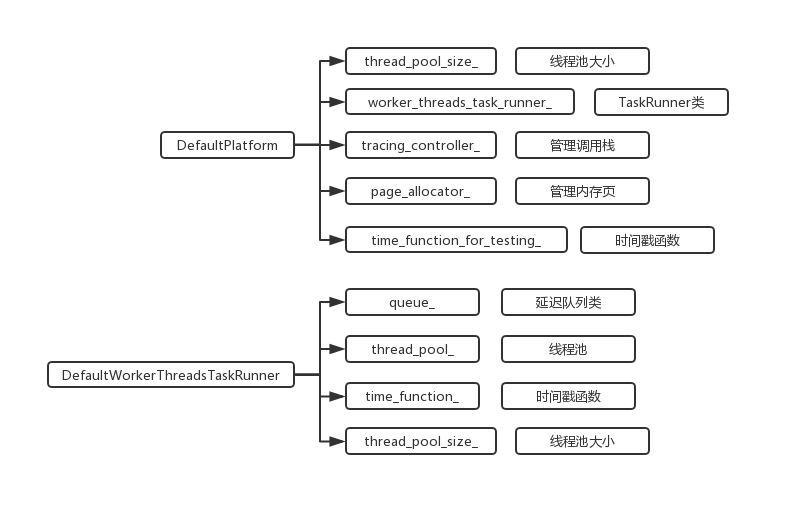
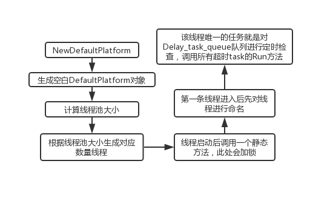

先说结论，V8引擎在默认Platform中初始化的这个线程是用于处理类似于setTimeout的延时任务。
另外附一些图，包括继承树、关键属性归属、纯逻辑工作流程，对代码木得兴趣的看完图可以X掉了。



上一篇讲了V8初始化默认Platform对象时会做三件事，其中生成空白DefaultPlatform、获取线程池大小已经讲过了，剩下线程启动相关的内容。
写之前花了10几分钟学了下mac下C++的线程，对API有一个初步了解，给一个简单的例子，大概流程如下。
// V8源码中设置的stack_size 在测试demo中不好使
const int stack_size = 1 * 1024 * 512;
int tmp = 0;
// 线程的任务 参数来源于创建时的第四个参数
void* add(void* number){
tmp = tmp + *(int*)number;
printf("tmp: %i\n", tmp);
return nullptr;
};
int main(int argc, const char * argv[]) {
// 创建线程对象
pthread_t pt;
// 创建线程属性
pthread_attr_t attr;
memset(&attr, 0, sizeof(attr));
pthread_attr_init(&attr);
// 设置属性的size
pthread_attr_setstacksize(&attr, stack_size);
// 函数参数
int num = 5;
int* ptr = #
// 生成一个线程
// 参数列表参照各个变量
int ret = pthread_create(&pt, &attr, add, ptr);
if(ret != 0) printf("cannot create thread");
return 0;
}通过几个步骤，就可以创建一条线程来处理任务，启动后的输出就懒得截图了，反正就是打印一个5。
有了上面的例子，可以慢慢来看V8初始化时多线程的启动过程，首先是入门方法。
// 3
void DefaultPlatform::EnsureBackgroundTaskRunnerInitialized() {
// 这里初始化DefaultPlatform的属性 需要加锁
base::MutexGuard guard(&lock_);
if (!worker_threads_task_runner_) {
worker_threads_task_runner_ =
// 3-2
std::make_shared<DefaultWorkerThreadsTaskRunner>(
thread_pool_size_, time_function_for_testing_
? time_function_for_testing_
// 3-1
: DefaultTimeFunction);
}
}
// 3-1
double DefaultTimeFunction() {
return base::TimeTicks::HighResolutionNow().ToInternalValue() /
static_cast<double>(base::Time::kMicrosecondsPerSecond);
}if中的worker_threads_task_runner是DefaultPlatform的私有属性，由于初始化时默认值为NULL，这里做一个定义赋值。第一个参数是在第二步获取的线程池大小，第二个参数是一个计数方法，默认引用之前Time模块里的东西，返回硬件时间戳，具体实现可以看我之前写的。
接下来看DefaultWorkerThreadsTaskRunner类的构造函数，接受2个参数。
// 3-2
// queue_ => DelayedTaskQueue::DelayedTaskQueue(TimeFunction time_function) : time_function_(time_function) {}
DefaultWorkerThreadsTaskRunner::DefaultWorkerThreadsTaskRunner(
uint32_t thread_pool_size, TimeFunction time_function)
: queue_(time_function),
time_function_(time_function),
thread_pool_size_(thread_pool_size) {
for (uint32_t i = 0; i < thread_pool_size; ++i) {
// 3-3
thread_pool_.push_back(base::make_unique<WorkerThread>(this));
}
}用2个参数初始化了3个属性，并且根据size往线程池中添加线程，thread_pool_这个属性用vector在管理，push_back相当于JS的push，当成数组来理解就行了。
添加的WorkerThread类是在DefaultWorkerThreadsTaskRunner里面的一个私有内部类，继承于Thread，单纯的用来管理线程。C++的this比较简单，没有JS那么多概念，就是一个指向当前对象的指针，来看一下线程类的构造函数。
// 3-3
DefaultWorkerThreadsTaskRunner::WorkerThread::WorkerThread(DefaultWorkerThreadsTaskRunner* runner)
// 这里调用父类构造函数
: Thread(Options("V8 DefaultWorkerThreadsTaskRunner WorkerThread")),
// 这里初始化当前类属性
runner_(runner) {
// 3-4
Start();
}这里同时调用了父类构造函数并初始化本身的属性，runner就是上面那个对象本身。这个构造函数长得比较奇怪，其中Options类是Thread的内部类，有一个接受一个类型为字符串的构造函数，而Thread的构造函数只接受Options类型，所以会这样，代码如下。
class Thread {
public:
// Opaque data type for thread-local storage keys.
using LocalStorageKey = int32_t;
class Options {
public:
Options() : name_("v8:<unknown>"), stack_size_(0) {}
explicit Options(const char* name, int stack_size = 0)
: name_(name), stack_size_(stack_size) {}
// ...
};
// Create new thread.
explicit Thread(const Options& options);
// ...
}可以简单理解这里给线程取了一个名字，在给Options命名的同时，其实也给Thread命名了，如下。
Thread::Thread(const Options& options)
: data_(new PlatformData),
stack_size_(options.stack_size()),
start_semaphore_(nullptr) {
if (stack_size_ > 0 && static_cast<size_t>(stack_size_) < PTHREAD_STACK_MIN) {
stack_size_ = PTHREAD_STACK_MIN;
}
set_name(options.name());
}
class Thread {
// The thread name length is limited to 16 based on Linux's implementation of
// prctl().
static const int kMaxThreadNameLength = 16;
char name_[kMaxThreadNameLength];
}
void Thread::set_name(const char* name) {
// 这里的长度被限制在16以内
strncpy(name_, name, sizeof(name_));
name_[sizeof(name_) - 1] = '\0';
}看注释说，由于Linux的prctl方法限制了长度，所以这里的name也最多只能保存16位，而且C++的字符串的最后一位还要留给结束符，所以理论上传入Options的超长字符串"V8 DefaultWorkerThreadsTaskRunner WorkerThread"只有前15位作为Thread的name保存下来了，也就是"V8 Defaultworke"，非常戏剧性的把r给砍掉了。。。
初始化完成后，会调用Start方法启动线程，这个方法并不需要子类实现，而是基类已经定义好了，保留关键代码如下。
// 3-4
void Thread::Start() {
int result;
// 线程对象
pthread_attr_t attr;
memset(&attr, 0, sizeof(attr));
// 初始化线程对象
result = pthread_attr_init(&attr);
size_t stack_size = stack_size_;
if (stack_size == 0) {
stack_size = 1 * 1024 * 1024;
}
if (stack_size > 0) {
// 设置线程对象属性
result = pthread_attr_setstacksize(&attr, stack_size);
}
{
// 创建一个新线程
// 3-5
result = pthread_create(&data_->thread_, &attr, ThreadEntry, this);
}
// 摧毁线程对象
result = pthread_attr_destroy(&attr);
}参照一下文章开始的demo，可以看出去掉了合法性检测和宏之后，在初始化和启动线程基本上V8的形式是一样的。
简单总结一下，V8初始化了一个DefaultPlatform类，计算了一下可用线程池大小，生成了几条线程弄进线程池，而每条线程的任务就是那个ThreadEntry，这篇全部写完算了。
这个方法贼麻烦。
// 3-5
static void* ThreadEntry(void* arg) {
Thread* thread = reinterpret_cast<Thread*>(arg);
// We take the lock here to make sure that pthread_create finished first since
// we don't know which thread will run first (the original thread or the new
// one).
{ MutexGuard lock_guard(&thread->data()->thread_creation_mutex_); }
// 3-6
SetThreadName(thread->name());
// 3-7
thread->NotifyStartedAndRun();
return nullptr;
}由于线程任务的参数定义与返回值都是void*，这里直接做一个强转。随后会加一个线程锁，因为这几个线程在初始化的时候并不需要同时执行这个任务。执行的第一个方法虽然从名字来看只是简单的给线程设置名字，但是内容却不简单。
传入SetThreadName方法的参数是之前那个被截断的字符串，看一下这个方法。
// 3-6
static void SetThreadName(const char* name) {
// pthread_setname_np is only available in 10.6 or later, so test
// for it at runtime.
int (*dynamic_pthread_setname_np)(const char*);
// 读取动态链接库
*reinterpret_cast<void**>(&dynamic_pthread_setname_np) =
dlsym(RTLD_DEFAULT, "pthread_setname_np");
if (dynamic_pthread_setname_np == nullptr) return;
// Mac OS X does not expose the length limit of the name, so hardcode it.
static const int kMaxNameLength = 63;
// 从读取到的方法处理name
dynamic_pthread_setname_np(name);
}里面用了一个很玄的api的叫dlsym，官方解释如下。
The function dlsym() takes a "handle" of a dynamic library returned by dlopen() and the null-terminated symbol name, returning the address where that symbol is loaded into memory.
大概就是根据句柄读取一个动态链接库，名字就是那个字符串，返回其在内存中的地址，所以这块的调试全是机器码，根本看不懂，最后返回的一个函数。
知道这是个函数就行了，至于怎么设置线程名字我也不太想知道。
第二步的方法名就是运行线程的任务，调用链比较长，会来回在几个类之间穿梭，调用各自属性的方法。
// 3-7
void NotifyStartedAndRun() {
if (start_semaphore_) start_semaphore_->Signal();
// 3-8
Run();
}
// 3-8
void DefaultWorkerThreadsTaskRunner::WorkerThread::Run() {
runner_->single_worker_thread_id_.store(base::OS::GetCurrentThreadId(), std::memory_order_relaxed);
// 3-9
while (std::unique_ptr<Task> task = runner_->GetNext()) {
// 每一个task会实现自己的run函数
task->Run();
}
}
// 3-9
std::unique_ptr<Task> DefaultWorkerThreadsTaskRunner::GetNext() {
// 3-10
return queue_.GetNext();
}不理清楚，这个地方真的很麻烦，绕得很，可以看顶部的继承图。总之，最后调用的是DefaultWorkerThreadsTaskRunner类上一个类型为DelayedTaskQueue类的GetNext方法，返回类型是Task类，V8只是简单定义了一个基类，实际运行时的task都需要继承这个类并实现其Run方法以便线程执行。
最后的最后，GetNext的逻辑其实可以参考libuv的逻辑，机制都大同小异，方法的源码如下。
// 3-10
std::unique_ptr<Task> DelayedTaskQueue::GetNext() {
base::MutexGuard guard(&lock_);
for (;;) {
/**
* 这一片内容完全可以参考libuv事件轮询的前两步
* 1、从DelayQueue队列中依次取出超过指定时间的task
* 2、将所有超时的task放到task_queue_队列中
* 3、从task_queue_中将task依次取出并返回
* 4、外部会调用task的Run方法并重复调用该函数
*/
double now = MonotonicallyIncreasingTime();
std::unique_ptr<Task> task = PopTaskFromDelayedQueue(now);
while (task) {
task_queue_.push(std::move(task));
task = PopTaskFromDelayedQueue(now);
}
if (!task_queue_.empty()) {
std::unique_ptr<Task> result = std::move(task_queue_.front());
task_queue_.pop();
return result;
}
if (terminated_) {
queues_condition_var_.NotifyAll();
return nullptr;
}
/**
* 1、当task_queue_队列没有task需要处理 但是delay_task_queue_有待处理task
* 这里会计算当前队列中延迟task中最近的触发时间 等待对应的时间再次触发
* 2、当两个队列都没有需要的事件
* 线程会直接休眠等待唤醒
*/
if (task_queue_.empty() && !delayed_task_queue_.empty()) {
double wait_in_seconds = delayed_task_queue_.begin()->first - now;
base::TimeDelta wait_delta = base::TimeDelta::FromMicroseconds(base::TimeConstants::kMicrosecondsPerSecond * wait_in_seconds);
bool notified = queues_condition_var_.WaitFor(&lock_, wait_delta);
USE(notified);
} else {
queues_condition_var_.Wait(&lock_);
}
}
}哎……V8引擎不过如此。